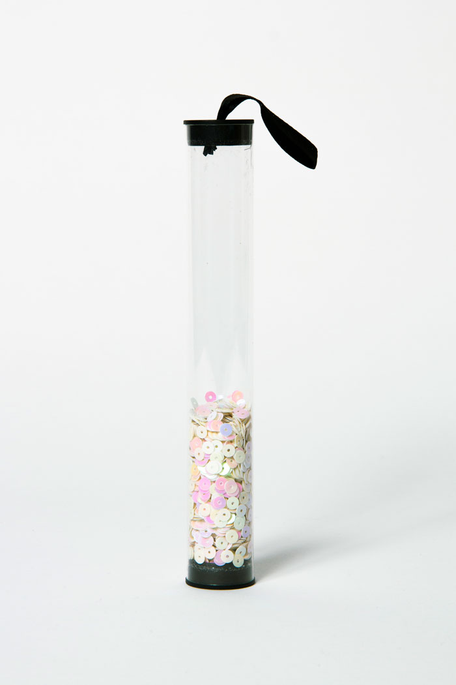

Photographie d'objet
Ces trois photographies d’un même objet ont été prises dans trois registres différents. La première image répond à un aspect commercial (sur fond blanc), dit « packshot », le but étant de présenter l’objet de la manière la plus neutre et la plus détaillée possible. La deuxième photographie est prise à la manière d’une image publicitaire, où l’objet est mis en valeur par une mise en scène (ambiance rose). Le dernier registre était libre.
